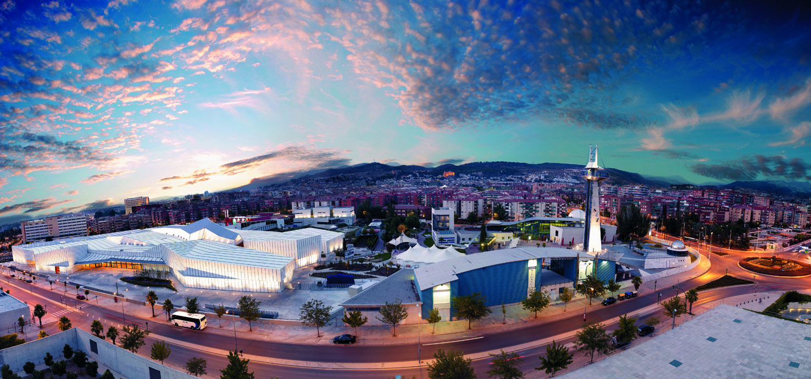

El Parque de las Ciencias es un centro de ciencia y museo de 70.000 m², situado a escasos minutos a pie del centro histórico de Granada. Desde su inauguración, en 1995, es el museo más visitado de Andalucía. Más de 7 millones de personas conocen ya sus instalaciones, una cifra que lo ha consolidado como centro de referencia internacional de la divulgación científica en el sur de Europa. Está abierto todo el año, de martes a domingos y festivos, y ofrece actividades y exposiciones para todos los públicos.
Es el edificio principal y este edificio fue su 4ª fase de ampliación y su construcción estuvo dirigida por el arquitecto Carlos Ferrater en colaboración de Eduardo Jiménez Artacho, Premio Nacional de Arquitectura en 2009. Consta de un gran lucernario que imita la orografía de Sierra Nevada, y desde el Hall de entrada se distribuyen los siguientes espacios expositivos
Con estas instalaciones se inauguró el museo en mayo de 1995. Alberga gran parte de los contenidos en sus salas de exposiciones permanentes: Biosfera, Eureka, Percepción y Explora. El Planetario también se encuentra en este edificio, que está diseñado por los arquitectos Francisco Pastor y Francisco Maeso.
En el exterior del museo existen 27.000 m² destinados a zonas verdes que albergan los recorridos botánicos, la carpa de la Gimnasia Mental, el jardín de Astronomía, la plaza Marie Curie o las esculturas dinámicas.
El BioDomo es una instalación del museo dedicada a la educación, la conservación y la investigación de la biodiversidad del planeta Tierra. Fue inaugurado en julio de 2016 y recrea diferentes hábitats de la franja tropical del planeta, albergando en torno a 250 especies entre animales y plantas, principalmente de las zonas de Amazonia, Madagascar y de distintos espacios del área del Indo-Pacífico, como el río Mekong o el Sulawesi.
Sus proyectores recrean más de 7.000 estrellas, ofreciendo una visión del Universo en 360º, además de otros contenidos en una decena de programas diferentes.
Esta instalación, gracias a sus condiciones de temperatura y humedad que reproduce las condiciones climáticas y vegetales del Trópico, permite reproducir el ciclo vital completo de las mariposas de esta zona del planeta. Alberga más de veinte especies de mariposas de estas regiones, con unos 300 ejemplares, y más de 70 especies de plantas de origen tropical y subtropical, en unas condiciones de humedad del 70% y una temperatura entre 21º y 24º.
Actividad diaria en el museo, donde se puede observar el vuelo de un águila, ver cómo caza un halcón, cómo se alimenta un buitre o cómo es el vuelo de una lechuza. Está estructurado en dos partes: una expositiva, en la que se pueden ver aves y conocer sus características biológicas y ecológicas; y otra destinada al taller de vuelo, en la que observa en vivo cómo planean, cazan o se alimentan estas aves. El taller también hace hincapié en la importancia de las rapaces en el equilibrio ecológico de los ecosistemas y en la necesidad de su conservación.
| Precio | |
|---|---|
| Museo | |
| General | 7€ |
| Mayores 65 años, Menores 18 años y Grupos +15 Personas | 6€ |
| Escolar | 5.50€ |
| Museo + BioDomo | |
| General | 11€ |
| Mayores 65 años, Menores 18 años y Grupos +15 Personas | 9€ |
| Escolar | 9€ |
| Planetario | |
| General | 2.50€ |
| Mayores 65 años, Menores 18 años y Grupos +15 Personas | 2€ |
| Escolar | 2€ |
| BioDomo | |
| General | 6€ |
| Mayores 65 años, Menores 18 años y Grupos +15 Personas | 5€ |
| Escolar | 5€ |
| Horario | |
|---|---|
| Martes a Sábados y Lunes visperas de Festivos | 10:00-19:00 |
| Domingos y Festivos | 10:00-15:00 |